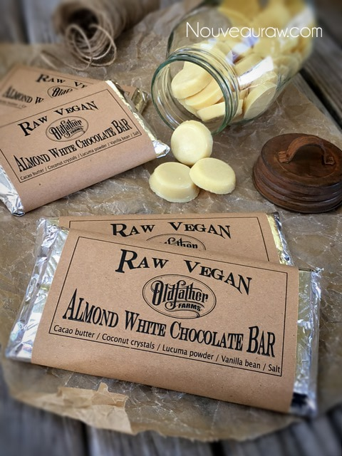

Almond White Chocolate Bar

~ raw, vegan, gluten-free ~
I find that when making chocolate, that there is more of a science and preciseness to it than any other type of raw dish that I make. With that being said, I have provided the measurements in weight, rather than cups. You can pick up a food scale for less than $20.00 and I recommend the investment.
Raw Coconut Crystals
When using raw coconut crystals it is very important to grind them to a powder before adding to the chocolate. Failure in doing this step with leave you with grainy chocolate, instead of a smooth, melt-in-your-mouth texture. I use either my spice grinder (used only for sugars) or my Magic Bullet. You can use other forms of dry sweeteners just be sure to grind them to a fine powder. This goes for the salt you use as well.
Chocolate can have a temper!
These chocolate bars were not tempered. If you want to learn how and why, please scroll down to the bottom where I provided a link that explains this process. Tempering creates a more stable, shiny, and snappy chocolate. But that’s not to say that these chocolates are not equally as good!
This recipe will hold up at room temps, but don’t put them in your pants pockets. Your body temperature could cause them to start to melt and that could create a real mess. Just saying. :) I prefer to keep these in the freezer just to prolong their shelf-life. I don’t eat much chocolate but it’s nice to have a piece every once in a while.
Another fun thing to do with these chocolate bars is to break them into small pieces and add them to raw cookie recipes. Caution, if added to the cookie batter and then dehydrated… this chocolate will melt. You can also add the chocolate chunks to raw ice batters. Like I need to tell you how to enjoy chocolate. hehe I hope you enjoy this recipe. Please comment below and share with others. Blessings, amie sue
Preparation:
- Have your chocolate molds ready and waiting. Make sure that they are clean and dry!
- Grate or break the raw cacao up into small chunks.
- Do not start the recipe with melted cacao butter.
- Place in a high-powered blender.
- This recipe works best using the Vitamix with the tamper.
- Add the lucuma, powdered coconut crystals, vanilla bean seeds, and salt.
- It is very important to powder the coconut crystals, otherwise, the chocolate will be grainy.
- Start the blender on low and quickly take it to high.
- Use the tamper to push the ingredients into the blades.
- If a lot of chunks of ingredients are collecting on the sides of the blender carafe or on the tamper, stop the machine and scrape everything back into the center of the blender.
- Once the chocolate has a smooth texture, be sure to check the temperature and using the blender to bring it to 107 degrees (F). Do not go above.
- I use this temperature gun.
Tempering the chocolate:
- This step will give the chocolate a shine and snap to it. You can skip it if you wish but then chocolate won’t have that nice snap to it that commercial chocolates have.
- Pour the liquid chocolate into a glass or metal bowl.
- Gently whisk the chocolate, keeping it moving for roughly 10+ minutes. This will depend on the room temperature.
- Keep checking the temperature. Our goal is to cool it down to 89 degrees (F).
- The chocolate will start to thicken as it cools.
- Pour the chocolate into the molds.
- If you use flimsy silicone molds, make sure that you have them nestled in a baking tray. This will help for transporting them if you wish to chill them in the fridge to speed up the setup time. Otherwise, just let them harden on the counter.
- I suggest that you wear cotton gloves when removing the chocolates from the molds to avoid getting fingerprints on the surface of the chocolate.

© AmieSue.com